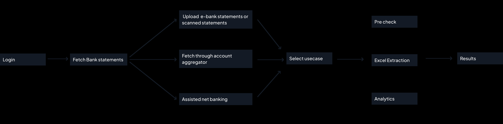
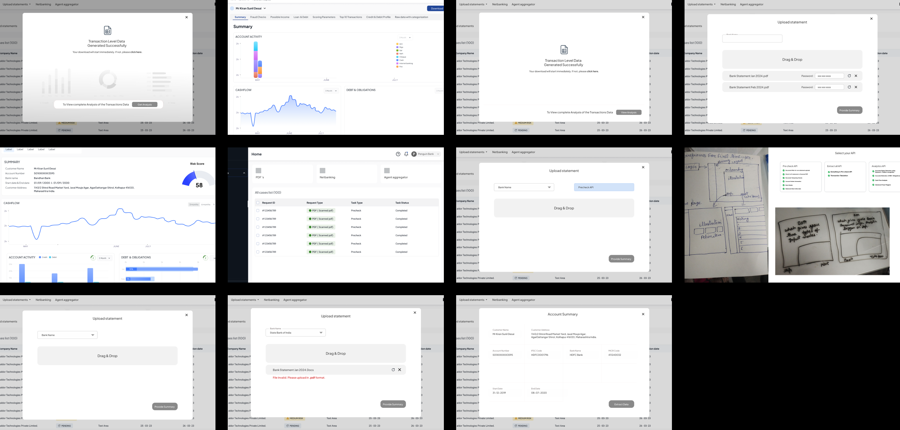

01 · Overview
What is BSA?
Underwriters and lenders spend hours manually reading through bank statements —
cross-referencing transactions in Excel, second-guessing data accuracy, and still
making decisions on incomplete information. For smaller lenders, existing tools were
either too expensive or too complex to adopt.
BSA analyzes bank transactions to surface real income, obligations, and spending
trends — giving lenders a clear picture of a borrower's true repayment capacity.
Built as a modular 3-API system, it lets lenders choose only what they need —
from basic document validation to full risk analytics.
🔥 Impact: Assessment time dropped from 3 minutes to 29 seconds, with 5 new clients
onboarded since launch.
02 · Problem
Underwriters were flying blind.
Lending decisions are high-stakes and time-sensitive. But the tools available —
particularly for SMEs and smaller NBFCs — were slow, expensive, or built for
enterprise scale. The result: assessments made from incomplete data, at high
turnaround cost, with significant fraud exposure.
Core Issues
01
Manual Excel-based analysis eating up hours per case
02
Decisions made without confidence in document authenticity
03
Tools priced out of reach for smaller lenders
Key Constraints
🚫
No Existing User Base
No existing user base for testing — we were building from scratch.
⚡
Fast Sprint Cycles
Speed over perfection — tight development timelines demanded rapid decision-making.
🎯
High Accuracy From Day One
In lending, wrong data means wrong decisions. There was no room for "good enough" accuracy.
03 · Market Insights
Learning from the market.
Leveraging a mix of SME stakeholder interviews and competitive benchmarking,
I analyzed the product ecosystems of Perfios, FinBox, and Glib. Through hands-on demos
and vendor consultations, I reverse-engineered the user journey to uncover consistent
friction points that existing market solutions fail to address.

Competitive benchmarking across Perfios, FinBox, and Glib
🐌
1. High Turnaround Time
Despite automation claims, workflows slowed due to manual handling of scanned PDFs and non-standard formats.
😤
2. Clunky Interfaces
Outdated UIs made navigation frustrating — especially for non-technical SME owners who needed speed.
📊
3. Unreadable Data Output
Raw data dumps with no interpretation. Users had to invest time just to understand what the tool was telling them.
💰
4. One-Size-Fits-All Pricing
Enterprise pricing locked out smaller lenders — a large, underserved segment with real need for this tooling.
📄
5. No Early Document Validation
No way to catch incorrect or invalid documents before processing — wasting time and resources on bad inputs.
04 · Who We Are Designing For?
Two users, one tool,
completely different jobs.
👤
Underwriter / SME Lender
Processes 10+ loan applications a day. Needs answers fast — not a tool to learn. Every extra click is friction they can't afford.
🎤
Sales / Demo User
Showcases BSA to credit heads and NBFCs evaluating vendors. Needs to explore every feature and make it look effortless. The demo is the pitch.
05 · Solution Architecture
Three modules, not one monolith.
Rather than one unified product, we split the solution based on use case.
The trigger: data showed 12% of users submit incorrect documents at step one —
catching that early saves everyone time. A modular approach also lets clients pay only
for what they need.
✅
PreCheck
Identifies incorrect documents at the initial stage, reducing delays and frustration for lenders.
📋
Excel Extraction
Extracts all relevant data from bank statements, ensuring accuracy and completeness.
🔍
Comprehensive Analysis
Provides deep insights for risk assessment and decision-making.
Why? This approach makes our solution flexible and scalable, allowing businesses to choose
what fits their needs — whether a simple document check or a full analysis.
06 · Wireframes
Exploring the structure.

Early wireframes — mapping the information architecture and flow
07 · Key Design Decisions
The challenge: Two users. One tool.
Completely different jobs.
Underwriters process applications under deadline — every extra decision is friction.
Sales teams run demos for credit heads and NBFCs — every hidden feature is a missed opportunity.
Designing one interface for both would have meant compromising both.
The decision: Two flows, built around job to be done.
Sales Flow
The sales flow is visual, exploratory, and feature-complete — designed to impress and
let clients discover the full depth of the product.
👉🏻 The sales team can showcase all possible approaches through which a statement can be
fetched, and let clients explore the option that fits their needs best.

Sales Flow — showcase all possible approaches for statement fetching
👉🏻 A step-by-step process gives users the context of each offering — configuration options
are presented descriptively, giving clients time to understand the full range of capabilities
and features available.

Step-by-step process with configuration options presented descriptively
Underwriter Flow
The underwriter flow strips everything non-essential. Anything that can be configured
through the backend is handled upfront — assessment type, package selection — so
underwriters don't have to think about it. They just upload and go.

Underwriter Flow — minimal steps, backend-configured, just upload and go

Underwriter Flow — streamlined upload experience
08 · From Data Dump to Decision Surface
Advanced analytics was one of
our key differentiators.
While competitors handed users raw Excel dumps and left them to figure it out, the goal
here was to build an insights dashboard that surfaces patterns — so lenders
could read a borrower's financial story without opening a single spreadsheet.
Iteration 1

First iteration of the analytics dashboard
👍
Debt & Obligation Breakdown
Showed how much of total income goes towards EMIs, loans etc. Gave lenders an immediate read on repayment pressure.
👍
Risk Triggers & Alerts Upfront
Risk triggers and alerts were surfaced upfront — lenders could focus directly on the risk aspects of a statement without having to hunt for them.
👎
No Account-level Fraud Visibility
In a multi-account scenario, there was no way to tell which specific account was tampered or problematic. The information existed but was buried deep in the profile section.
👎
Cashflow Chart Was Misleading
The chart was showing end-of-day balance instead of actual credit and debit movement. Lenders couldn't see inflow and outflow clearly — which is the core of what cashflow analysis needs.
👎
Context Lost Through Tab Switching
Basic account information required switching tabs. Every tab switch broke the lender's train of thought — and in a high-pressure environment, losing context mid-analysis is a real cost.
👎
Independent Time Filters Killed Cross-Chart Correlation
Each chart had its own time period selector. A lender changing one chart's range had no way to compare it against another — making pattern recognition across the dashboard nearly impossible.

Iteration 1 feedback — identifying what worked and what didn't
Final Iteration
The hardest part wasn't the layout — it was deciding which parameters actually
belonged in the overview. With so much financially relevant data, every metric felt
important. Too many numbers with no clear hierarchy meant lenders had no obvious place to start.
Worked closely with PMs and analysts to understand what truly drives a lending decision,
and through several iterations, we landed on a structure that puts the right parameters upfront.

Final iteration — prioritised data hierarchy, single scrollable page

Final dashboard — full analytics view
✅
Account-level Status Upfront
The bank statements table at the top immediately tells the lender which account is tampered, which has a reconciliation failure, and which is genuine — before they've looked at a single chart.
✅
Context-aware Summary
Business borrowers see business metrics & individual borrowers see personal metrics. The screen now speaks the language of the borrower type.
✅
Single Scrollable Page
No tab switching. Everything a lender needs is in one continuous flow — they never lose context mid-analysis.
✅
Risk Triggers Preserved & Quantified
What worked in the old design stayed — and got sharper.
09 · Challenges
What made this hard.
01
Data prioritisation. With an overwhelming amount of financial data across the product, deciding what belonged upfront and what didn't was never straightforward. Every parameter felt critical to someone — and without a clear hierarchy, there was no obvious place to start.
02
Custom Charts. The second hit during development. The first iteration used fully custom chart implementations across the analytics screens. What looked right in design became a bottleneck in build — each chart took far longer to develop than anticipated. Midway through, we had to make hard calls — dropping some visualisations and replacing others with standard library components, without losing the analytical depth they were meant to deliver.
10 · Impact
Results that shipped.
80%
TAT reduction that allows to serve more clients in less time
5+
New clients onboarded which directly impacts ARR and helps in market expansion
11 · Key Takeaways
What this project taught me.
01
Building a product from scratch was a unique opportunity that taught me the importance of speed and how to plan and execute within tight sprint cycles.
02
In the absence of constant user feedback, I had to find creative ways to ensure that the product was still aligned with user needs. This taught me to be more skeptical and always open to feedback, iterating and refining the product as we went along. By staying adaptable and responsive.
03
I learned how to prioritise features, balance speed with quality, and make informed decisions in the face of uncertainty. Ultimately, this experience reinforced the value of continuous learning and iteration in building successful products.